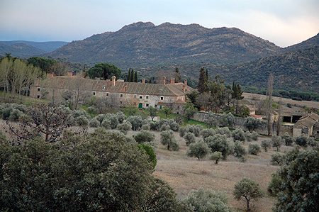

| MONUMENTOS | |||||||
|
|||||||
| LUGARES DE INTERÉS | |||||||
|
El Quexigal está situado en la Comunidad Autónoma de Castilla-León, en la provincia de Ávila, al Noroeste de Madrid, en el término municipal de Cebreros a doce kilómetros, en la carretera que va a Robledo de Chavela. La dehesa del Quexigal se encuentra en un lugar privilegiado de la comarca de Pinares, en un valle plano de granito a una altitud de 700 metros sobre el nivel del mar, limitando al norte por la Sierra de Malagón con los montes de la Sarnosa y la Cuerda del Guindal, atravesado por el arroyo de Santa María y rodeado por los ríos Becedas al Sur, Cofio al Este y el arroyo de Sotillo al Oeste. La superficie que ocupa actualmente es de entre 1182 y 1437 Ha., como parte segregada de la dehesa que en el siglo XVI ocupaba unas 5000 Ha., limitada por los términos de Cebreros, Hoyo de Pinares, San Martín de Valdeiglesias y Robledo de Chavela. En su origen se conocía con el nombre de Quexigar hasta que la propiedad la adquiere Felipe II, pasando a llamarse Quexigal, en el Carta de Fundación del Monasterio del Escorial. No se sabe con exactitud de donde procede el nombre de Quexigal, podía corresponder a un topónimo condicionado por un tipo de masa vegetal predominante en la zona, quejigo . El clima es el característico de las regiones del interior de la Meseta, lluvias escasas, con veranos muy calurosos e inviernos muy fríos. Por la situación geográfica en la que se encuentra la comarca de El Quexigal, goza de un microclima, estando las temperaturas suavizadas. La vegetación es de gran riqueza, con viñas, pinos, enebros, olivos, encinas, alisos, álamos, rebollos, quejigos, etc. La mayor parte de la madera que se empleó en la construcción del Monasterio del Escorial procedía de aquí, se extrajeron grandes cantidades de madera de pino albar o pino piñonero y de pino negral. Se puede encontrar todo tipo de caza menor, liebres, conejos, palomas, perdices, tórtolas etc. a parte de jabalíes y venados. En otros tiempos la heredad estuvo poblada de lobos, osos, ciervos, gamos, corzos, etc. según se desprende del "Libro de la Montería" de Alfonso XI, las memorias de caza de los frailes jerónimos y dos provisiones reales de Felipe II, por ellos sabemos que sus ríos era muy ricos en pesca, como truchas, barbos, bogas, tencas, etc. Se empieza a tener noticias escritas del Quexigal en el “Libro de la montería de Alfonso XI” en él hace un recorrido por los montes de este lugar, haciendo varias referencias: “Los Fitueros de sobre el Quexigal es buen monte de oso en invierno. Et es el armada entre el Cofio, et Sancta María del Quexigal. Et en la vocería, del cabo de Serores que nos pase contra Alberche. Et es el armada entre Navaluenga, et Quexigal. Et son las vocerías, la una en el camino que va desde la Nava de Villaescusa a los Palacios del Quexigal...Et son las armadas, la una al Portezuelo, et la otra en la Cuesta Mala de El Quexigal. Las Cabreras de Sancta María del Quexigar, et la Sarnosa, et Cabeza Osera, et el Forno Viejo (Horno Viejo, es todo un monte, et es muy real monte de oso en ivierno. Et son las armadas, la una á Val de Casiellas, al camino que vá del Quexigar al Helipar en derecho de los Fiteros et la otra al Agotraduero. También en ése libro se hace la descripción de la cacería de un oso, y la referencia a una posada: “et fue a morir al camino que va desde el Quexigar al Helipar, cuantio a tercio de lengua de la posada del Quexigar”En el siglo XIV estaba poblado y era una aldea de Ávila, en una escritura de venta fechada el 29 de abril de 1372, en la cual el señor del Quexigal, Benito Pérez, hijo de Johan Martínez de Quexigal, vecino de este lugar, otorgó a favor de Fernán Martínez, hijo de Antón Rodríguez, de Ávila, vendiéndole la dehesa de Quexigal, término, casas, viñas, huertos, árboles, aguas estantes, corrientes, tierras, solares, prados, pastos... por 400 maravedis. Durante todo el siglo XV los propietarios de la heredad son los miembros de la familia nobiliaria natural de Ávila, llamados Gómez Villalva, que son los que transmitirán la propiedad en el 1563 a los monjes jerónimos. En esta época el Quexigal estaba despoblado y convertido en una dehesa quedando restos de la Iglesia, la venta y parte de la casa principal. En el año 1447 se parte el Quexigal y Navaluenga entre Isabel González, mujer de Gil de Villalva, difunto, y sus hijos y de otra parte Gil Gómez Rengifo. En la heredad del Quexigal se cosechaba entre otros productos: cereales, vino, aceite, hortalizas, frutales, piñones, etc, pastaban entre 1500 y 2000 cabras, unas 60 vacas y novillos un número indeterminado cerdos y 52 colmenas. Fabricaban productos de carácter artesanal, como la pez, la cendra, el vidrio y el aceite de enebro. Para elaborar el vino ya en el siglo XIII existía lagar y bodega. En tiempo de los Villalba el Quexigal se administraba en régimen de explotación directo 52 colmenas y todos los derivados de la madera. Se arrendaban las tierras para el cultivo de cereales y los contratos duraban entre diez y doce años, durante los cuales un grupo de individuos solidariamente se comprometían a labrar un determinado espacio de la finca, se les permitía “cortar y talar el monte de la dehesa, ansi mayor como menor, de pinos, enebros, cornicabras, carracas, encinas y cualesquiera árboles que están en la dicha dehesa en lo que ha de sembrar y está amojonado”, siempre que de pino a pino se dejaran veinte varas y de encina quince, pudiendo rozar todo lo comprendido en este espacio. También se arrendaban los pastos, los piñones, bellotas y a veces hasta la caza menor, y determinadas partes de la dehesa a los artesanos, como los que fabricaban pez, cendra, el vidrio y el aceite de enebro. En 1483 tenemos noticias del Quexigal debido a un pleito en el que intervienen los Reyes Católicos, actúa de testigo Velasco Hernández del Portal, vecino de Cebreros, bajo juramento declara que los Rengrifo, una de las familias nobles de Ávila, han tomado parte del término de Cebreros y lo han juntado con el Quexigal y Navaluenga que es suyo . El 21 de junio de 1500, los Reyes Católicos tienen que intervenir en un pleito entre la Villa de San Martín de Valdeiglesias, la ciudad de Ávila, el lugar de Cebreros, la mujer y los hijos de Gil de Villalva, por el motivo y la razón de que San Martín quería levantar un puente en el río Becedas y hacer un camino por el término de Quexigal (de la tierra de Ávila) a lo que se oponían los vecinos de Cebreros, los Villalba propietarios del dicho término y la ciudad de Ávila. “Por impedir y no consentir lo susodicho, la dicha villa de San Martín, o algunos vecinos de ella, prenden los bueyes y otras cosas a los vecinos del dicho lugar de Zebreros y de otros lugares de la tierra de la ciudad de Ávila. Todos dicen que la dicha ciudad y el lugar de Zebreros y la mujer y los hijos de Gil de Villalba recibirían mucho agravio y daño, en su nombre nos suplicaron y pidieron la merced que mandásemos que el dicho puente no se hiciese y en el caso que se tuviese que hacer un camino que no se hiciese camino alguno por el dicho término del Quexigal. Por lo susodicho dicen que los vecinos de la dicha villa de San Martín lo hacen para que los que vienen de Vizcaya y de Segovia y otras partes a comprar vino y otras cosas non vayan al dicho lugar de Zebreros salvo a la dicha villa de San Martín, y por aprovechar de los términos de la dicha ciudad y del dicho término del Quexigal, y que sobre ello les proveyésemos de remedio con justicia, o cómo lo hiciese vuestra merced” . Mientras que estuvo habitado el Quexigal éstos tuvieron como señor territorial al propietario del término redondo de la aldea, y como señor jurisdiccional al rey, del cual eran súbditos, y al que pagaban sus impuesto, mientras que desde una perspectiva religiosa, la iglesia de Santa María de El Quexigal, dependía de la diócesis de Ávila, a la cual y hasta que la heredad fue adquirida por el Monasterio, fueron a para los impuestos eclesiásticos de los habitantes de la aldea . Felipe II tras la victoria de la batalla de San Quintín en el año 1557 y muerto su padre Carlos V en 1558 decide construir un monasterio en honor a San Lorenzo. Durante cuatro años se estuvo buscando donde emplazarle sin que se encontrase un lugar apropiado, ya que se quería que estuviese cercano a Madrid, fuese un lugar aislado, con buen aire y saludable con abundancia de agua, materiales de construcción y fácil de abastecer. La Semana Santa del año 1561, el Rey la pasó en el Monasterio de los jerónimos de Guisando, pasada ésta, recorrió la zona de Cadalso, Cebreros, El Quexigal, etc, buscando un lugar para asentar su obra. La lejanía de estos lugares con Madrid le hace desistir de la idea y de buscar otro lugar más cercano. De nuevo en el la Semana Santa del año 1562, el rey vuelve a recorrer la comarca en que se inserta El Quexigal y según el Padre Sigüenza queda maravillado de “aquellas montañas y peñas, vestidas de diversas plantas, más hermosas que Salomón con toda su gloria” . La dehesa pertenecía a Diego de Villalba, fue vendida en 1563, junto con la casa, por éste y sus sobrinos a Fray Juan de Huete, en nombre de Felipe II, por 30.000 ducados de oro. Fue utilizada por los frailes jerónimos como granja para que sirviese como despensa de suministros al Monasterio del Escorial, produciendo aceite de oliva y de enebro, vino, cereales, hortalizas, frutas, miel y cera; criándose animales de granja, también obtenían productos manufacturados como vidrio, pez y cendra y de esta finca asimismo extraían madera. El Quexigal era de lugar recreo y descanso de los frailes, utilizado además como Casa Seminario y Coto Real siendo visitado varias veces por Felipe II, Felipe IV, Carlos II y Carlos IV. De sus 300.000 cepas se elaboraba un vino de gran calidad, uno de los mejores de España, así como el aceite de sus 8.000 olivas que se podía comparar con el mejor de Andalucía. Se recolectaban hasta 600 fanegas de trigo, de su arrendamiento a vecinos de Cebreros y Hoyo de Pinares. Felipe II encargó la construcción de hornos en 1564, en el Quexigal y Cebreros, para la fundición de vidrio y obtener cristales para las ventanas del Monasterio del Escorial. El Censo de Tomás González recoge, que en el año 1587 “el lugar del Hoyo tiene una pila y doscientos y veinte vecinos y la villa de Quegigal, su anejo, hay seis vecinos y no tiene pila...” Desde 1563 fecha en que se adquirió la heredad por el Rey Felipe II, hasta 1808 año en que se inició la guerra de la Independencia, por la que se exclaustraron los monjes jerónimos del convento del Monasterio del Escorial; el Quexigal estuvo vinculado al Monasterio y estuvo sometido a los intereses económicos de la comunidad escurialense. Durante la guerra de la Independencia en el año 1808 se hace cargo de la administración de la finca del Quexigal la Junta Provincial de Ávila y después la de Madrid, siendo exclaustrados los monjes jerónimos. Cuando terminó la guerra los monjes volvieron hacerse cargo de la misma. Debido a la desamortización la propiedad monacal pasa a formar parte de los bienes del Patrimonio de la Corona de Isabel II en el año de 1837. En el año 1898 la propiedad pasa al Ministerio de Hacienda. En el año 1870 es vendida y tras pasar por varios propietarios en el año 1927 la compró el príncipe D. Max Egón de Hohenlohe-Langenburgh, casado con la hija de la Duquesa de Parcent, María de la Piedad. Esta familia rehabilito toda la finca convirtiéndola en un esplendido lugar de recreo y descanso. En 1956 sufrió un incendio que devoró la mayor parte de la casa y de su contenido, el resto de las obras de arte que se salvaron se subastaron en 1979. La familia Hohenlohe vendió la Real Heredad del Quexigal a una compañía perteneciente al Grupo de Empresas EULEN que ha reintegrado todas las segregaciones efectuadas a lo largo de estos últimos años. Actualmente se elaboran productos como miel, plantas de envase de hierbas medicinales, y vino de gran calidad obtenido de la uva "viura" y "sauvignon". La Junta de Castilla y León lo declaró, tras su publicación en el BOE, Bien de Interés Cultural, con categoría de Monumento, a favor de la Casa, entorno y dependencias de la finca "El Quexigal" en Cebreros (Ávila).  |
||